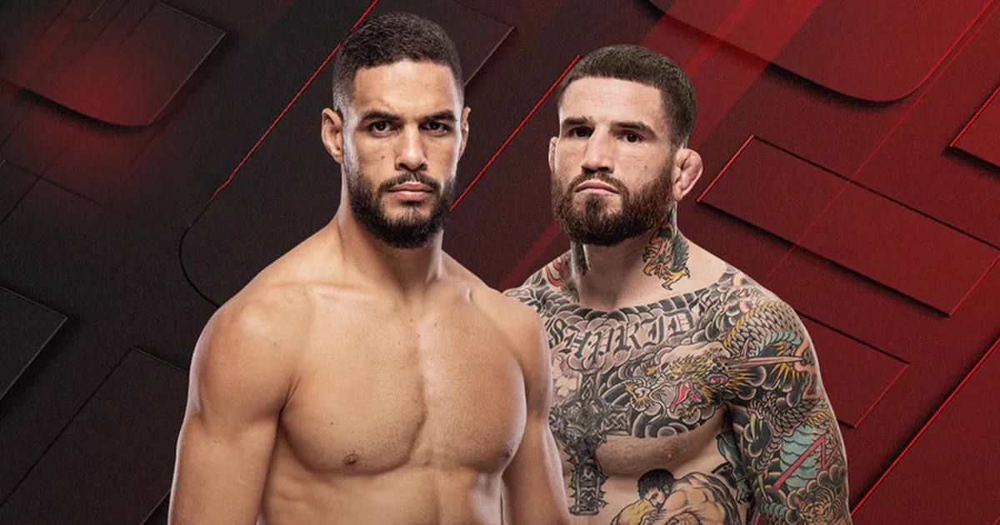

UFC Vegas 125 adds 10 bouts to Bonfim-Brady card
The UFC filled out its January 23 card at the Meta APEX on Tuesday, adding 10 bouts around the rebooked Bonfim-Brady welterweight headliner — with No. 7 featherweight Pat Sabatini vs. Vinicius Oliveira in the co-main event.

Disclosure: this post contains affiliate links. I earn a commission on qualifying purchases.
UFC Vegas 125 is no longer just a main event. The UFC added 10 matchups to the card on Tuesday, filling out the January 23 show at the Meta APEX in Las Vegas around the rebooked welterweight headliner between Gabriel Bonfim and Sean Brady. A 12th bout, Tre'ston Vines vs. Martin Kozak, was also confirmed for the card, bringing the lineup to a dozen fights.
The co-main event is a featherweight fight with real stakes: No. 7-ranked Pat Sabatini (22-5) takes on Vinicius Oliveira (24-4), a former ranked bantamweight moving up in weight for a pivotal 145-pound matchup.
The card as it stands
Gabriel Bonfim vs. Sean Brady: Welterweight
Pat Sabatini vs. Vinicius Oliveira: Featherweight
Neil Magny vs. Daniil Donchenko: Welterweight
Azamat Bekoev vs. Eric McConico: Middleweight
Yadier del Valle vs. Ezra Elliott: Featherweight
Trent Miller vs. Nick Klein: Middleweight
Ramon Taveras vs. Roman Gabriel Puga: Featherweight
Jamall Emmers vs. Ramiro Jimenez: Featherweight
Ty Miller vs. Christopher Alvidrez: Welterweight
Smilla Sundell vs. Melissa Mullins: Bantamweight
Anna Melisano vs. Marina Spasic: Strawweight
Tre'ston Vines vs. Martin Kozak: Middleweight
A second chance at the main event
Bonfim and Brady were supposed to headline UFC Vegas 124 on November 7. Brady withdrew nine days out with a staph infection in his knee, and the UFC pulled Bonfim from the card entirely after it couldn't find a replacement in time. The promotion announced the rebooking during the UFC 334 broadcast on November 16, and the January 23 date gives both men a full camp to settle a fight that never got to happen.
The undercard has a storyline of its own. Neil Magny — the welterweight division's all-time wins leader — returns against Daniil Donchenko, coming off a rally win over Ramiz Brahimaj at UFC 330 that gave him his record-setting 25th welterweight victory.
The card streams on Paramount+, with the main card at 8:00 p.m. ET and prelims at 5:00 p.m. ET. Tickets go on sale Friday, December 4 at 10:00 a.m. PT via AXS.
Watch
Source: NUNES WANTS REMATCH AT 145! JONES SLAMS HOKIT! ASPINALL BREAKS SILENCE! (MMA Jacked) — daily MMA news roundup with the Brady vs. Bonfim rebooking covered at the 5:19 mark.
Sources
• UFC Vegas 125: Bonfim-Brady undercard (Boxing News)
• Gabriel Bonfim vs. Sean Brady fight night event adds slew of undercard fights (The Bitstream)
• Nine fights added to UFC Vegas 125, including the all-time Welterweight wins leader (The Bitstream)
• Sean Brady vs. Gabriel Bonfim rebooked to headline UFC Vegas 125 (Sherdog)
• Neil Magny books UFC fight No. 39 vs. Daniil Donchenko (MMA Junkie)
Gear up: UFC gear and apparel: via Fanatics